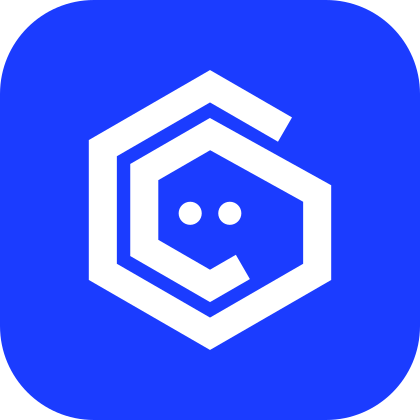
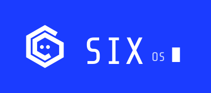
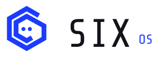

Hex Face
A hexagonal band that spirals inward like the numeral six, drawn as one stroke the way a line of code is written, with two eyes at its centre. They are Pip's eyes: the mark is the system looking back at you. Source: the SIX OS Logo canvas, direction D.



App icon sizes
At 32 px and under, use six-app-icon-small.svg: the band is heavier and the eyes bigger, so they survive the pixel grid.
Colour studies
Cobalt is the brand. The other seven are studies for themes, editions and wallpapers. Each pairs a mark colour with its own near-black ground, and the eyes can differ from the band, as in Ink on Paper.
Using the mark
Terminal type
Everything you read · 11–20 px
Display, big numbers, the wordmark
The boot screen only
Boot screen
Power-on frame, the eyes open, the band draws itself around them, SIX OS types out and glitches once, and a terminal loader fills while "bravo six going dark" types underneath. About six seconds; any key skips it.
Play the boot screen